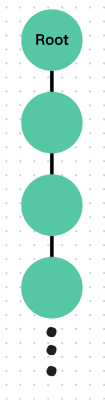
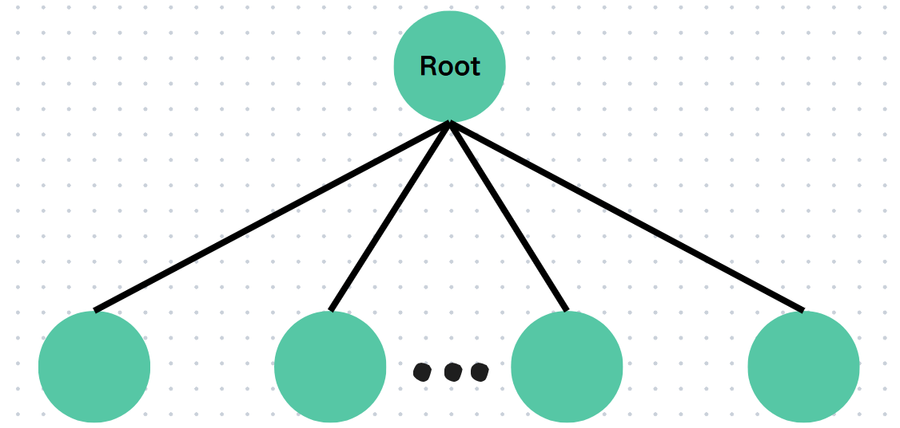
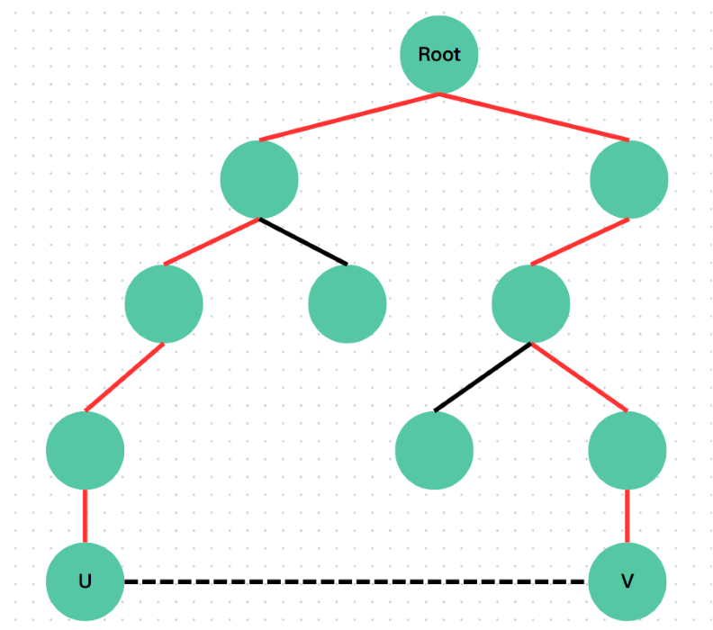

并查集
定义
并查集 (\(\rm DSU\)) 是一种负责管理元素所在的区域的一种数据结构。并查集使用一个森林来实现，每个一树里的元素是属于同一个集合的，也就是说是同一个组。
并查集主要有两个操作实现的，顾名思义就是 并 和 查 了：
合并 \(\rm Union\) ： 合并两个元素的树，也就是把两个元素所属集合合并。
查询 \(\rm Find\) ：查询一个元素所属的树（也就是所属的组）。
初始化
每一个元素都有一个所属的组（树），一开始每一个元素的组（树）仅包含自己，也就是自己就是根节点。一开始每一个点的根节点自然就是自己了（因为就一个点）。
| int root[MAXN];
void init() {
for (int i = 1; i <= n; i++) root[i] = i; // 代表元素/根节点就是自己
}
|
查询
给定一个元素，查询这个元素的代表元素，也就是查询这个树的根节点。我们递归找到自己的父亲的父亲，直到找到根节点，也就是自己的父亲就是自己（听着有点怪）。
递归版本：
| int findr(int x) {
if (root[x] == x) return x;
return findroot(root[x]);
}
|
| int findr(int x) {
int u = x;
while (fa[u] != u) u = fa[u];
return u;
}
|
路劲压缩
这样会发现一个问题，如果我们的树长这个样子：

也就是说如果树是一条链，发现每次查询最下面的点会递归很多次才可以到根节点。既然树内的结构不影响根节点我们就可以把这个做成菊花图，如下：

递归版本：
| int findr(int x) {
if (root[x] == x) return x;
return root[x] = findroot(root[x]); // 这样我们的查询时间就是O(1)
}
|
1
2
3
4
5
6
7
8
9
10
11
12
13
14 | int findr(int x) {
int u = x;
while (fa[u] != u) {
x = fa[u];
}
int v = x;
while (fa[v] != v) {
int f = fa[v];
fa[v] = u;
v = f;
}
return u;
}
|
合并
常规合并
让两个元素所在的树合并，就是找到两个树的根节点，让根节点进行合并就可以了。
| void merge(int x) {
int rx = findroot(x), ry = findroot(y);
root[rx] = ry;
}
|
这样我们就实现了两个树的合并
启发式合并
在合并的过程中我们可以让树的大小较小的树合并到较大的树上，这样可以让查询的时间更短，次数更少。
1
2
3
4
5
6
7
8
9
10
11
12 | int root[MAXN], siz[MAXN]; // 多加了一个树的大小
// findroot函数在这里就省略了，可以参考对应的章节
void merge(int x, int y) {
int rx = findroot(x), ry = findroot(y);
if (siz[rx] < siz[ry]) {
root[rx] = ry;
siz[ry] += rx;
} else {
root[ry] = rx;
siz[rx] += ry;
}
}
|
判环
在无向图中，并查集可以用来判断是否存在环（仅判断是否存在，并不能找到这一整个环）。如果在加这一条边之前，两个树已经用另外一条路径连接了（根节点相同），说明就有环。可以参考下图来辅助理解：
（红色边使得 \(u\) 已经有另一条路径可以到达 \(v\)）

| bool merge(int x, int y) { // 返回true就是没有环，返回false就是有环
int rx = findroot(x), ry = findroot(y);
if (rx == ry) return false; // 合并失败，加的边重复了
root[rx] = ry; // 这里就是普通合并了，就不按照启发式合并写了
return true;
}
|
带权并查集
带权并查集就是带了权值的并查集，每一个点都有一个权值，我们通常设置为 dis[]，代表这个点与根的关系。
通常，如果两个元素需要去维护
扩展域并查集
Code
这里面主要包含了并查集的
例题
基础并查集
带权并查集
扩展域并查集